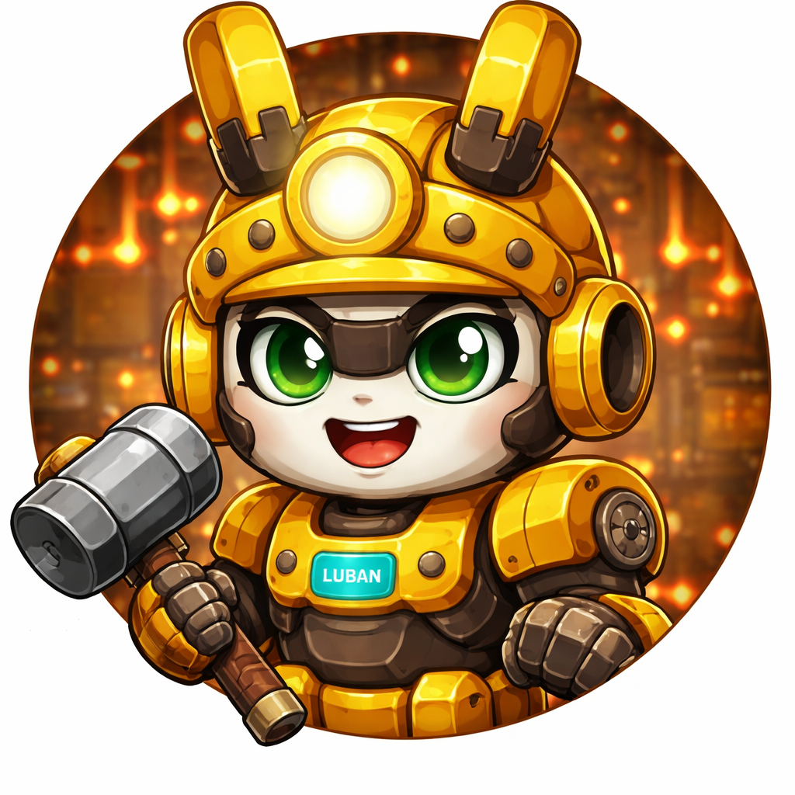

主控层
鲁班主控负责总入口、总决策、总验收，确保多员工输出最终能收敛成一个明确结果。
- 接收任务
- 判断风险等级
- 统一拍板
Multi-Agent Digital Workforce
鲁班-AI智能体不是单个聊天助手，而是一套可调度、可分派、可汇总、可决策的多员工协作系统。 在这里，开发、理财、调度、汇报、沟通都能被拆成清晰的职能模块，再挂载给合适的员工角色。
 主控核心
主控核心
 开发
开发
主控模式
Architecture
官网不只是展示角色，而是把主控、员工和 SKILL 模块之间的关系结构化呈现出来。
鲁班主控负责总入口、总决策、总验收，确保多员工输出最终能收敛成一个明确结果。
员工不再是模糊的人设，而是有身份、平台、边界和默认能力包的角色容器。
能力被拆成独立职能模块，后续新增岗位时无需重写逻辑，只需要重新组合挂载。
“员工负责承载角色，SKILL 负责承载能力，主控负责让整个系统真正形成组织。”
Staff Matrix
每位员工都是角色容器，真正的能力来自可复用的职能 SKILL 模块。



Skill Modules
能力被拆成模块后，员工可以被灵活组合，而不是被固定写死，后续扩岗位也会轻很多。
统一接收总任务，判断优先级和最终执行方向。
查看详情把复杂目标拆成可执行步骤，明确负责人和顺序。
查看详情按员工和交付物进行模块化分派与交接。
查看详情完成前后端开发、脚本落地和工程实现。
查看详情定位异常原因，设计排查顺序并给出修复建议。
查看详情处理依赖、配置、端口和运行环境问题。
查看详情提供第二方案、兼容性补充和风险差异分析。
查看详情进行标的研究、机会分析和市场动态跟踪。
查看详情从保守视角补充反向判断和风险提醒。
查看详情输出已完成、进行中、待处理和关键变化。
查看详情把真正需要主控关注的事项拎出来单独提示。
查看详情生成飞书群通知、协同同步与催办话术。
查看详情输出正式、稳妥的企业微信通知和内部口径。
查看详情处理零散事务，整理信息并推动事项闭环。
查看详情Use Cases
这套系统适合的不只是“聊天”，而是能进入具体业务和执行链路的真实场景。
鲁班1号负责主实现，鲁班2号负责技术复核，诸葛亮控制节奏，主控统一验收。
范蠡输出研究判断，吕不韦补充风险视角，最后交由主控决定是否继续推进。
诸葛亮拆解任务，小昭和阿朱分别接飞书与企业微信协同，上官婉儿做统一汇报。
Workflow
从任务输入到结果交付，官网展示的是一个清晰的多员工执行闭环。
鲁班主控接收需求，判断类型、风险等级和是否需要多人协作。
诸葛亮将任务拆成多个模块，并为每个模块指定员工和交付标准。
各员工按固定挂载或临时挂载的 SKILL 并行执行，减少职责重叠。
上官婉儿统一汇总阶段结果，并把关键风险和节点推送给主控。
鲁班主控基于汇总内容做最终判断，形成对外执行结果。
Roadmap
官网不仅展示当前员工，还为未来岗位和平台接入预留了统一扩展路径。
补齐亚马逊运营、顺风车运营、星链项目等新角色，并拆出独立 SKILL 模块。
让主控基于任务类型、风险等级和优先级自动路由到最适合的员工。
把飞书、企业微信、微信和更多渠道打通到统一员工协作系统中。
Next Step
下一步可以继续扩展为多页面网站，补员工详情页、SKILL 详情页、接入演示页和 GitHub 部署页， 让它从“项目展示”升级成“产品官网”。